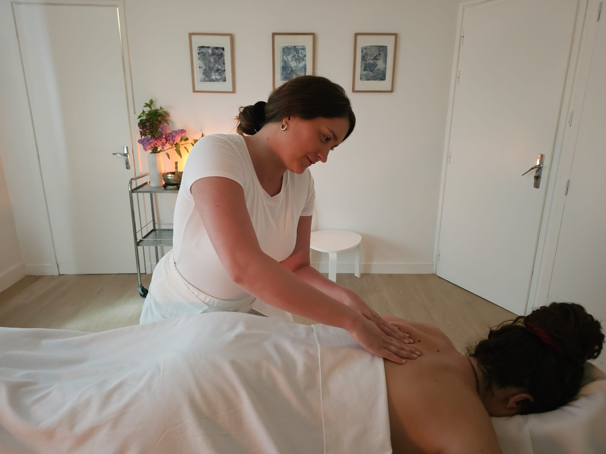
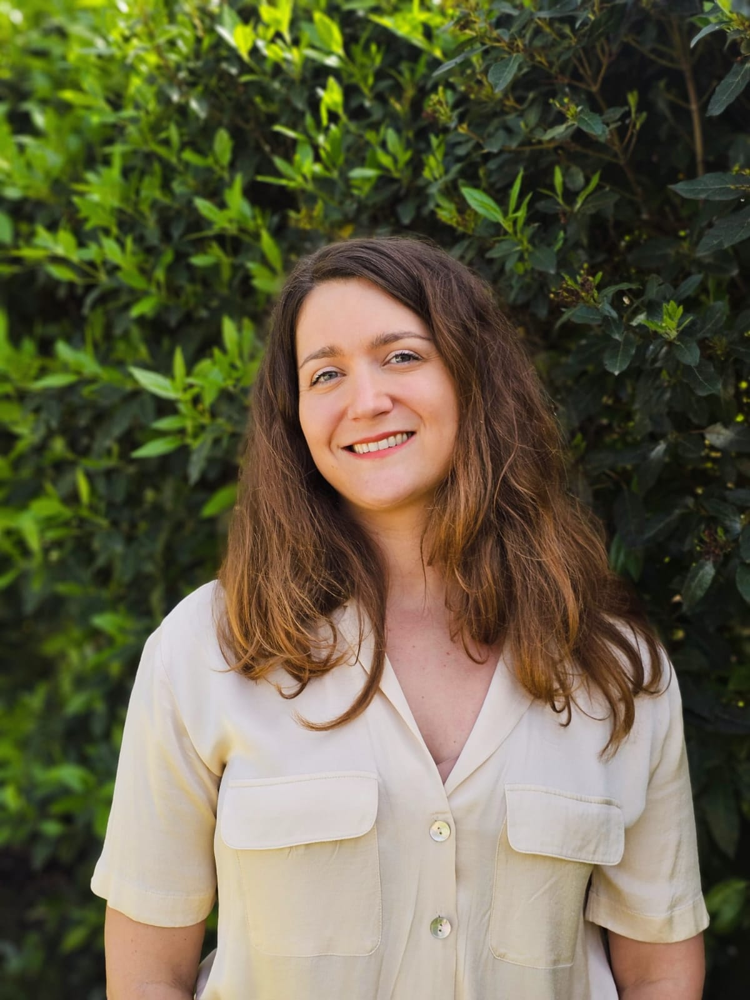

L'espace
Un espace pour se déposer, et laisser le corps revenir à lui.
Le soin
Un massage unique.
Un soin qui se construit dans l'instant, à partir de ce qui est là.
Le toucher est lent, enveloppant, parfois plus appuyé. Il suit le corps, plutôt qu'il ne dirige.
Un espace pour relâcher, et revenir à des sensations plus simples.
Le soin se reçoit à l'huile d'amande douce chaude, jusqu'au cuir chevelu. Prendre le temps ensuite fait partie de l'expérience.
Le déroulé
Chaque séance commence par un temps d'échange.
Le massage se déploie ensuite de manière fluide, en s'ajustant à chacun.
Un temps est laissé à la fin, pour revenir tranquillement.
Le soin peut inclure des dimensions sonores et olfactives, selon ce qui se présente.
Pour qui
Pour celles et ceux qui ressentent le besoin de ralentir.
Revenir à quelque chose de plus simple, plus vrai.
Eugénie
Je m'appelle Eugénie.
Je suis gersoise d'origine.
Mon chemin m'a menée du monde du luxe, sur la côte d'Azur, aux ashrams en Inde,
avant de revenir à quelque chose de plus simple.
Aujourd'hui, j'accompagne par le corps,
avec une approche nourrie par le massage, le yoga et la méditation,
et par un travail continu autour de la présence et de l'écoute.
J'ai travaillé dans l'univers du spa de luxe,
et mes voyages ont nourri ma sensibilité,
notamment à travers l'ayurvéda.
Je poursuis également une formation en thérapies humanistes.
Chaque séance est avant tout une présence,
adaptée à ce qui est là, dans l'instant.

Tarifs
- 1h1580€
- 1h30100€
(temps d'accueil et de retour au calme inclus)
Pour une première séance, prévoir quelques minutes d'avance.
Aussi
Je me déplace également à domicile
(à partir de 100€, hors frais de déplacement).
Je propose également des séances de yoga et de méditation,
notamment dans le cadre d'événements ou de petits groupes.
Les modalités et tarifs sont adaptés en fonction de la demande.
Je vous invite à me contacter directement afin d'en discuter ensemble.
Où me trouver
Cabinet médical
2 rue des Sols
32200 Gimont
Le parking se situe à 1 minute à pied,
rue Monplaisir, en face de l'école primaire.
Le cadre
Les séances se déroulent dans un espace calme et confidentiel. Le respect, l'écoute et la sécurité sont au cœur de chaque accompagnement.
Questions fréquentes
Faut-il prévoir quelque chose après la séance ?
Je vous invite à prévoir un moment tranquille après le soin,
pour laisser le corps intégrer.
Porter une tenue confortable qui ne craint pas l'huile est préférable.
Boire de l'eau ensuite est recommandé.
Comment s'habiller ?
Vous pouvez venir simplement, comme vous êtes.
Une tenue confortable pour l'après séance est conseillée.
Les bijoux seront retirés avant le massage.
Le massage est-il adapté à tous ?
Le massage s'adapte à chaque personne,
dans le respect du corps et de ses besoins.
Il peut être reçu à tout âge,
avec une approche toujours ajustée.